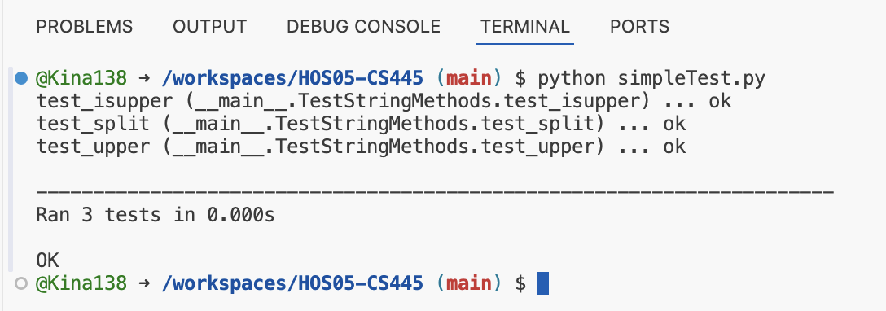
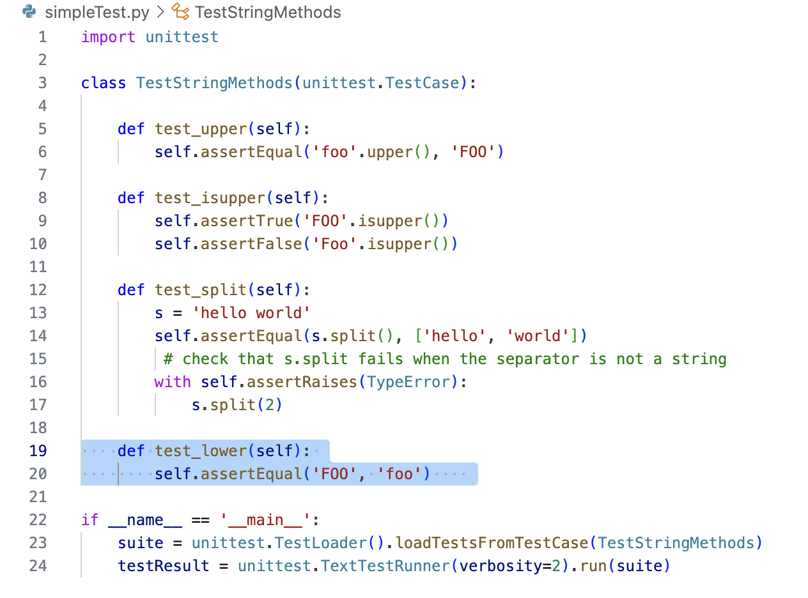
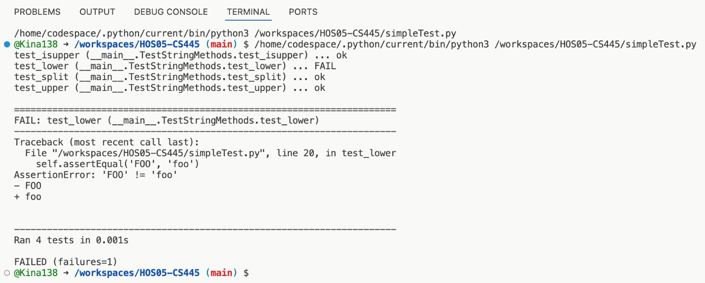
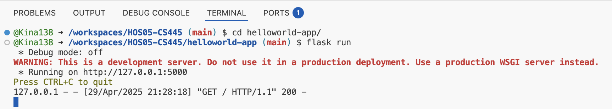
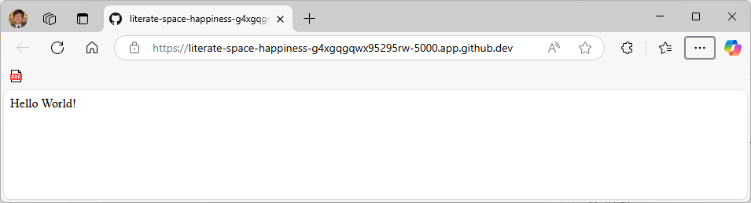
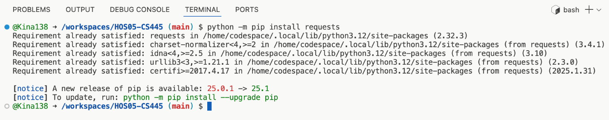
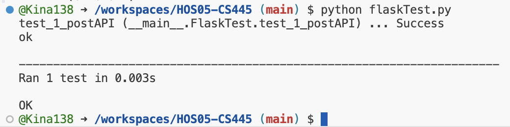
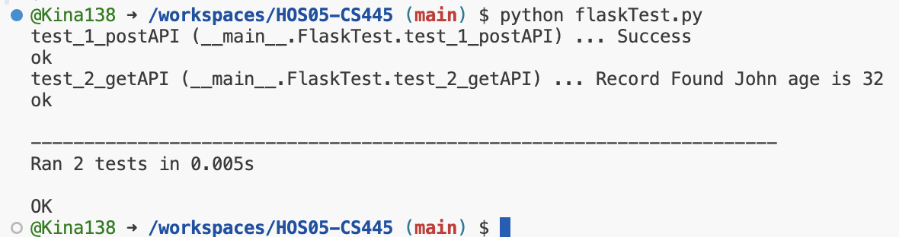

| Student | |
| Started | |
| Submitted |
Course: CS445 Software Process Management — School of Technology & Computing (STC), City University of Seattle (CityU).
Unit tests target small pieces of logic in isolation; the lab progresses to an automated test suite exercising a Flask app (often with pytest or unittest per your PDF).
Open your Codespace and repository.
Author minimal tests, run them from the terminal, capture required screenshots.
Wire tests to the Flask microservice; run the suite and fix failures before submission.








Push test modules and evidence to GitHub.
The sections above are curated for scanning and figures. Expand below for the full plain-text extraction from the official PDF — every numbered step and instruction as extracted (spacing may differ from print layout).
1 | CS445
CS445 Software Process Management
HOS05A - Unit Testing
04/29/2025 Developed by Kina Anh Bui
05/01/2025 Reviewed by Sam Chung
12/04/2025 Reviewed by Clark Ngo
School of Technology & Computing (STC)
City University of Seattle (CityU)
Before You Start
•
Screenshots may be different from your environment.
•
The directory path shown in screenshots may be different from yours.
•
The steps might have subtle discrepancies. Please use your best judgment while completing each
step in this cookbook-style tutorial.
•
Some steps may not be explained in detail. If you are not sure what to do:
1. Consult the resources from the course.
2. If you cannot solve the problem after a few tries (usually 15 -30 minutes), ask a TA for help.
Readings and Examples:
• Visit the CS 445 Repository for Examples.
o
Select the related module.
o
Visit the README.md file.
o
Find examples for your practice.
Learning Outcomes
● Section 1: Accessing GitHub Codespaces
● Section 2: Testcase Basic
● Section 3: Automation Test Suite for Flask Application
● Section 4: Pushing Your Work to GitHub
Upload the following to your GitHub Repository generated from GitHub Classroom.
1. Upload the screenshot of your ‘01 simpleTest’ as ‘01_simple_test_firstname_lastname.png’ by using
your first and last name.
2. Upload the screenshot of your ‘02 simpleTest add’ as
‘02_simple_test_add_firstname_lastname.png’ by using your first and last name.
3. Upload the screenshot of your ‘03 flaskTest’ as ‘03_flask_test_firstname_lastname.png’ by using
your first and last name.
4. Upload the screenshot of your ‘04 flaskTest add’ as ‘04_flask_test_add_firstname_lastname.png’ by
using your first and last name.
Resources
•
unittest — Unit testing framework | Python
•
Getting Started with Python HTTP Requests for REST APIs | datacamp
2 | CS445
Key Concepts
This HOS will teach us about Unit Test creation and how to leverage this knowledge in the Automation
Test Suite.
Unit Tests and Automation Test Suite
Unit tests evaluate specific components of your system without considering the complete execution of
your software or the interactions between these components.
Automated tests come in many forms, and there are numerous tools available to test both the back end
and front end of your system. With automated testing, you can create a comprehensive set of scenarios
to run against your codebase, along with the expected results for each scenario.
3 | CS445
Section 1: Accessing GitHub Codespaces
Follow the instructions here.
GitHub Codespaces are online cloud-based development environments that allow you to easily write, run,
and debug your code. It is fully integrated with your GitHub repository and provides a seamless experience
for developers.
Prerequisites:
•
Create your GitHub account.
4 | CS445
Section 2: Testcase Basic
1) Starting in Codespaces
📌 When you open a Codespace, you’re already inside the repository — no need to clone!
A terminal and editor (like VS Code) are already set up for you.
2) Test Case Creation
1. Create a new file, simpleTest.py, and add the following code to the simpleTest.py.
import unittest
class TestStringMethods(unittest.TestCase):
def test_upper(self):
self.assertEqual('foo'.upper(), 'FOO')
def test_isupper(self):
self.assertTrue('FOO'.isupper())
self.assertFalse('Foo'.isupper())
def test_split(self):
s = 'hello world'
self.assertEqual(s.split(), ['hello', 'world'])
# check that s.split fails when the separator is not a string
with self.assertRaises(TypeError):
s.split(2)
if __name__ == '__main__':
suite = unittest.TestLoader().loadTestsFromTestCase(TestStringMethods)
testResult = unittest.TextTestRunner(verbosity=2).run(suite)
2. Run this command in the terminal
python simpleTest.py
Take a screenshot of your ‘01 simpleTest’ as ‘01_simple_test_firstname_lastname.png’ by using your
first and last name.
A test case is produced by subclassing "unittest.TestCase". Three different tests are defined by methods
whose names start with the letters test. Because of this naming convention, the test runner is aware of
which methods are tests. Every test must include a call to assert a statement, and the evaluation results
of this call determine if the expectations from the corresponding test cases have been met (Unittest —
Unit Testing Framework, n.d.).
There are no failed test cases; they are all successful.
5 | CS445
6 | CS445
3. Add the following code into simpleTest.py, as shown in the image.
def test_lower(self):
self.assertEqual('FOO', 'foo')
4. Again, run python simpleTest.py in the terminal, and we will get this result.
Take a screenshot of your ‘02 simpleTest add’ as ‘02_simple_test_add_firstname_lastname.png’ by
using your first and last name.
Test case “test_lower” fails because the assert statement expects results FOO in lower case, but the
actual value is in upper case.
7 | CS445
Section 3: Automation Test Suite for Flask Application
1) Starting with HOS03 Section 2
We are writing Unit Test cases on the Flask application, which we have created in HOS03. Open
command prompt terminal and navigate through the command. Follow HOS03 for running Flask
Application. The output should be as follows.
2) Test Case Creation Installing the Request Package
1. Open the new terminal and run the following command to install the 'request' package.
python -m pip install requests
2. The output will be as follows.
8 | CS445
3) HTTP Post Method
1. Create a new file named flaskTest.py and copy the code below.
>>> touch flaskTest.py
import requests
import unittest
class FlaskTest(unittest.TestCase):
def test_1_postAPI(self):
url = "http://localhost:5000/students"
data = '{"name": "John","age": 32}'
headers = {"Content-Type": "application/json"}
# A POST request to the API
response = requests.post(url, data=data, headers=headers)
# Print the response
print(response.text)
# Test case result
self.assertEqual('Success', response.text)
if __name__ == '__main__':
suite = unittest.TestLoader().loadTestsFromTestCase(FlaskTest)
testResult = unittest.TextTestRunner(verbosity=2).run(suite)
2. Run this command in terminal and the output will be as follows.
python flaskTest.py
Take a screenshot of your ‘03 flaskTest’ as ‘03_flask_test_firstname_lastname.png’ by using your first
and last name.
Here we are inserting data into the Flask application and checking the response. As we expect positive
results, we are checking "Success" depending on the results we want, we can check our Test cases.
9 | CS445
4) HTTP Get Method
1. Add the following code into class FlaskTest(unittest.TestCase) of file flaskTest.py.
def test_2_getAPI(self):
url = "http://localhost:5000/students/John"
# A GET request to the API
response = requests.get(url)
# Print the response
print(response.text)
# Test case result
self.assertEqual('Record Found John age is 32', response.text)
Run this command in terminal and the output will be as follows.
python flaskTest.py
Take a screenshot of your ‘04 flaskTest add’ as ‘04_flask_test_add_firstname_lastname.png’ by using
your first and last name.
Note: The Python test case library runs tests in ascending order. If any test cases depend on another,
ensure they are named in ascending order. For example, when testing a Flask application, the Post method
should be executed before checking if the data exists. Thus, these tests should be named "test_1_postAPI"
and "test_2_getAPI", respectively.
Section 4: Pushing Your Work to GitHub
How to submit your work in GitHub
How to submit your screenshots on GitHub
Unit tests catch regressions early.
pytest collects tests deterministically.
Assertions document expected behavior.
Install, write, run, fix, ship.
Drag components here in the correct order…